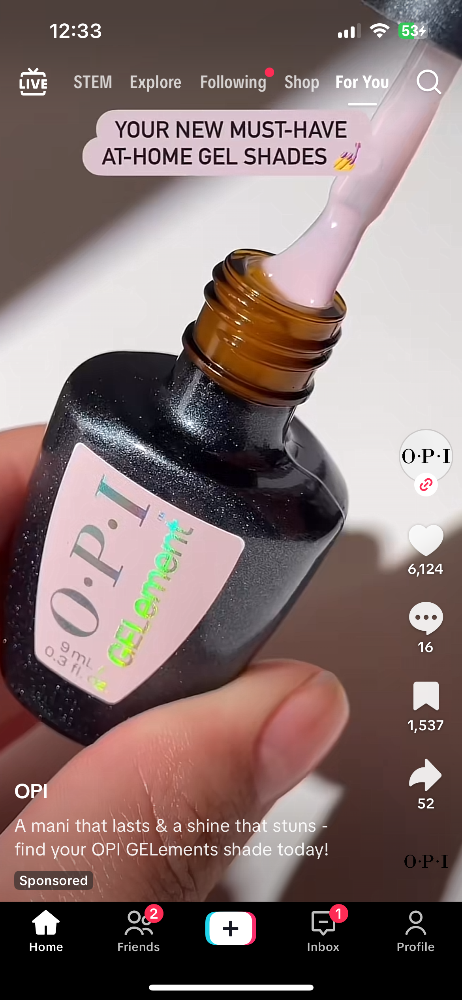

Disguised Ads
On TikTok, ads show up on your FYP that look like regular TikToks and only have tiny “Ad” indicators in the caption. This is good for companies targeting a wide range of people.


On TikTok, ads show up on your FYP that look like regular TikToks and only have tiny “Ad” indicators in the caption. This is good for companies targeting a wide range of people.